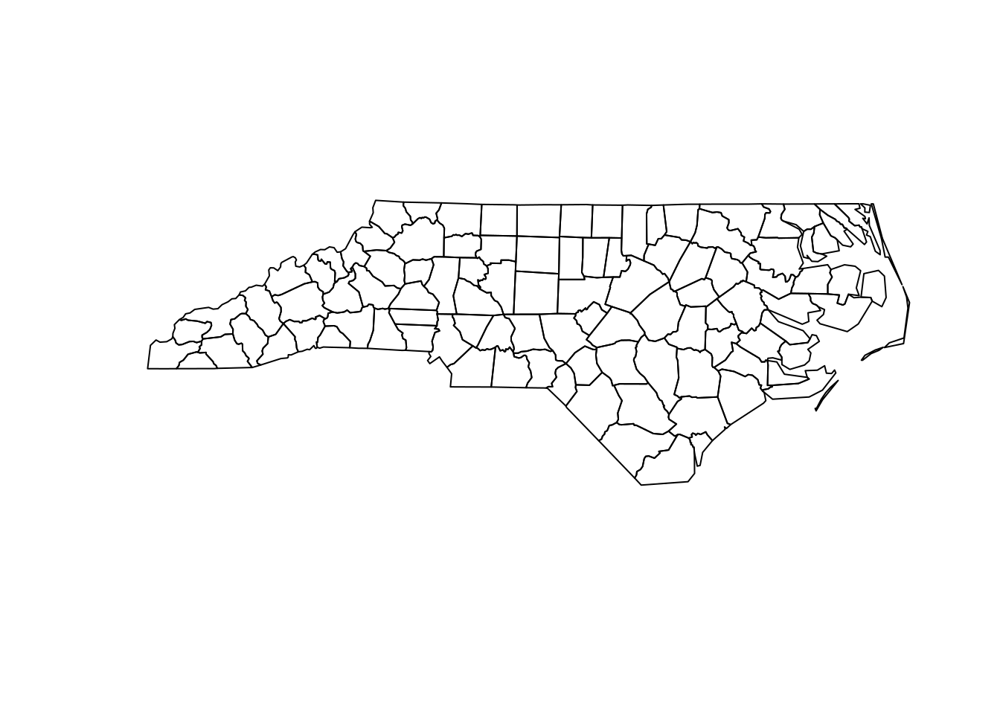
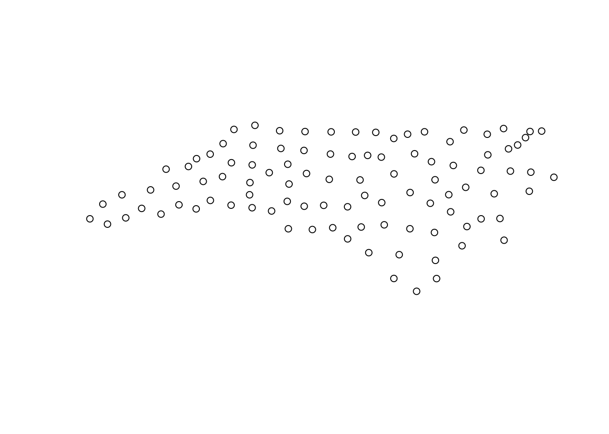

This vignette describes a number of issues that did not come up in the previous vignettes, and that may or may not be categorized as “frequently asked questions”. Readers are encouraged to provide entries for this vignette (as for the others).
EPSG stands for a maintained, well-understood set of spatial reference systems, maintained by the International Association of Oil & Gass Producers (IOGP), and found at epsg.org. From R, we can get access to the EPSG dataset programatically (as a data.frame) by:
rgdal::make_EPSG()see also the first vignette.
sf deal with secondary geometry columns?sf objects can have more than one geometry list-column, but always only one geometry column is considered active, and returned by st_geometry. When there are multiple geometry columns, the default print methods reports which one is active:
library(sf)
## Loading required package: methods
## Linking to GEOS 3.5.1, GDAL 2.2.1, proj.4 4.9.3
demo(nc, ask = FALSE, echo = FALSE)
## Reading layer `nc.gpkg' from data source `/home/edzer/R/x86_64-pc-linux-gnu-library/3.4/sf/gpkg/nc.gpkg' using driver `GPKG'
## Simple feature collection with 100 features and 14 fields
## Attribute-geometry relationship: 0 constant, 8 aggregate, 6 identity
## geometry type: MULTIPOLYGON
## dimension: XY
## bbox: xmin: -84.32385 ymin: 33.88199 xmax: -75.45698 ymax: 36.58965
## epsg (SRID): 4267
## proj4string: +proj=longlat +datum=NAD27 +no_defs
nc$geom2 = st_centroid(st_geometry(nc))
## Warning in st_centroid.sfc(st_geometry(nc)): st_centroid does not give
## correct centroids for longitude/latitude data
print(nc, n = 2)
## Simple feature collection with 100 features and 14 fields
## Attribute-geometry relationship: 0 constant, 8 aggregate, 6 identity, 1 NA's
## Active geometry column: geom
## geometry type: MULTIPOLYGON
## dimension: XY
## bbox: xmin: -84.32385 ymin: 33.88199 xmax: -75.45698 ymax: 36.58965
## epsg (SRID): 4267
## proj4string: +proj=longlat +datum=NAD27 +no_defs
## First 2 features:
## AREA PERIMETER CNTY_ CNTY_ID NAME FIPS FIPSNO CRESS_ID BIR74
## 1 0.114 1.442 1825 1825 Ashe 37009 37009 5 1091
## 2 0.061 1.231 1827 1827 Alleghany 37005 37005 3 487
## SID74 NWBIR74 BIR79 SID79 NWBIR79 geom
## 1 1 10 1364 0 19 MULTIPOLYGON (((-81.47276 3...
## 2 0 10 542 3 12 MULTIPOLYGON (((-81.23989 3...
## geom2
## 1 POINT (-81.49826 36.4314)
## 2 POINT (-81.12515 36.49101)We can switch the active geometry by using st_geometry<- or st_set_geometry, as in
plot(st_geometry(nc))
st_geometry(nc) <- "geom2"
plot(st_geometry(nc))
st_simplify preserve topology?st_simplify is a topology-preserving function, but does this on the level of individual feature geometries. That means, simply said, that after applying it, a polygon will still be a polygon. However when two features have a longer shared boundary, applying st_simplify to the object does not guarantee that in the resulting object these two polygons still have the same boundary in common, since the simplification is done independently, for each feature geometry.
sf objects?They do! However, many developers like to write scripts that never load packages but address all functions by the sf:: prefix, as in
i = sf::st_intersects(sf1, sf2)This works up to the moment that a dplyr generic like select for an sf object is needed: should one call dplyr::select (won’t know it should search in package sf) or sf::select (which doesn’t exist)? Neither works. One should in this case simply load sf, e.g. by
library(sf)Most (but not all) of the geometry calculating routines used by sf come from the GEOS library. This library considers coordinates in a two-dimensional, flat, Euclidian space. For longitude latitude data, this is not the case. A simple example is a polygon enclosing the North pole, which should include the pole:
polygon = st_sfc(st_polygon(list(rbind(c(0,80), c(120,80), c(240,80), c(0,80)))),
crs = 4326)
pole = st_sfc(st_point(c(0,90)), crs = 4326)
st_intersects(polygon, pole)
## although coordinates are longitude/latitude, st_intersects assumes that they are planar
## Sparse geometry binary predicate list of length 1, where the predicate was `intersects'
## 1: (empty)which gives a wrong result (no intersection).
Similar to the above, centroids are computed assuming flat, 2D space:
st_centroid(polygon)[[1]]
## Warning in st_centroid.sfc(polygon): st_centroid does not give correct
## centroids for longitude/latitude data
## POINT (120 80)where the centroid should have been the pole.
This message indicates that sf assumes a distance value is given in degrees. To avoid this message, pass a value with the right units:
pt = st_sfc(st_point(c(0,0)), crs = 4326)
buf = st_buffer(polygon, 1)
## Warning in st_buffer.sfc(polygon, 1): st_buffer does not correctly buffer
## longitude/latitude data
## dist is assumed to be in decimal degrees (arc_degrees).
buf = st_buffer(polygon, units::set_units(1, degree))
## Warning in st_buffer.sfc(polygon, units::set_units(1, degree)): st_buffer
## does not correctly buffer longitude/latitude dataThis message appears if you loaded package spatstat after you loaded sf. For units objects created by package units, methods from spatstat are chosen which also implements a units class. The solution is to revert the order of loading packages: first spatstat, then units. Otherwise, spatstat version 1.53-2.012 should resolve this.